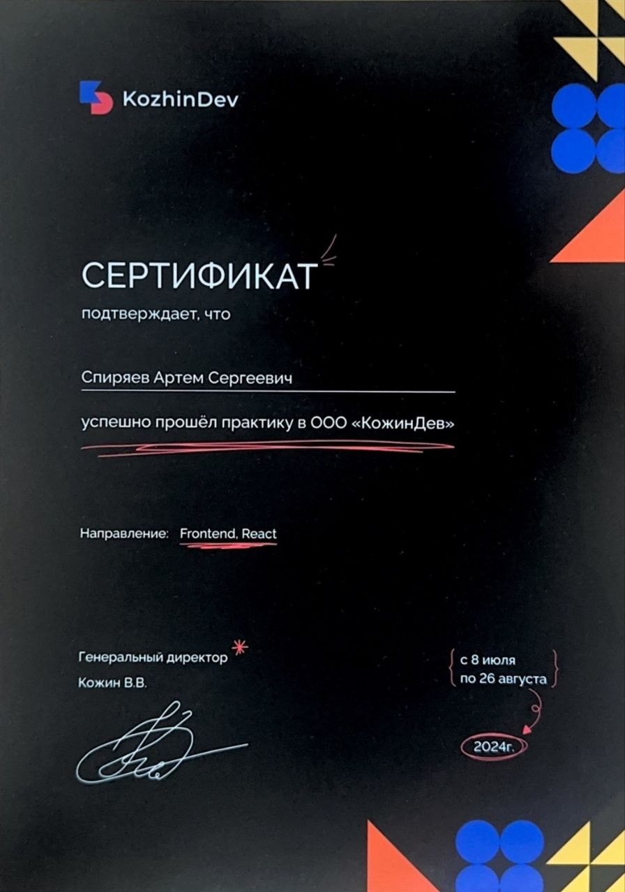
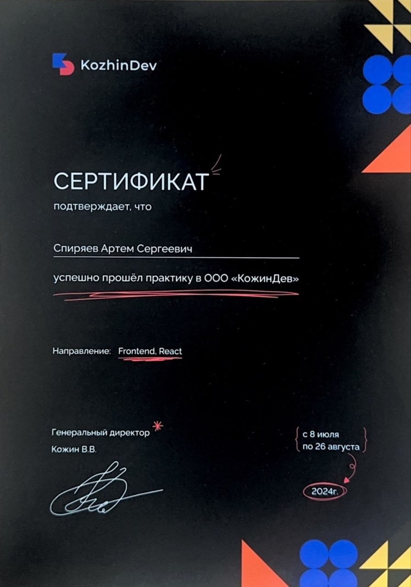

Привет! Меня зовут Артем и я - Frontend разработчик. Мне нравится решать проблемы, сложные алгоритмические задачи, хочется делать жизни людей проще, в частности создавать наглядные интерфейсы для обработки сложных данных. Не боюсь трудностей и с энтузиазмом принимаюсь за решение новых задач.
Цифровой ППР - это процесс автоматизации составления планов выполнения планово-предупредительных работ в отрасли электроснабжения железных дорог. Он направлен на упрощение и стандартизацию процесса планирования, который сейчас осуществляется в основном вручную. Суть идеи заключается в создании интерфейса, который позволит начальникам цехов легко заполнять годовые и месячные планы, а также составлять рапорты о выполнении работ.
Система обеспечивает простоту использования, гибкость в добавлении/исправлении данных и минимизируются возможные ошибки при передаче информации между различными документами. Для руководителей дистанции и выше будут доступны сводные данные, аналитические таблицы и графики, позволяющие отслеживать выполнение планов по всем подразделениям.
Основная цель - автоматизировать весь процесс планирования, начиная от составления планов до их проверки и отчетности, что должно значительно сократить время на выполнение текущих обязанностей и уменьшить вероятность ошибок. Это позволит сосредоточиться на стратегическом управлении, а не на рутинной бумажной волоките.
Успешно прошел вступительные испытания и прошел в первый он-лайн этап. Еженедельно разбирал лекции, связанные как с фронтенд направлением, так и с решением алгоритмических задач. Благодаря своевременному и полноценному решению домашних заданий прошел во очный этап обучения - Яндекс оплатил перелет от места жительства и обратно, жилье на целый месяц в центре Москвы.
В команде дизайнеров, frontend и backend разработчиков создавали веб-приложение удобного распределения студентов по проектам для Яндекса. По окончанию разработки презентовал проект в Москве.
За время обучения приобрел первый опыт работы в команде, научился решать алгоритмические задачи, познакомился с Next.js

Веб-приложение наглядного представления данных выполнения текущего ремонта контактной сети ОАО "РЖД" разработано в целях снижения риска возникновения отказов технических средств, установления удобного контроля за проведением текущего ремонта подразделениями.
Данные по ремонту (дата, местоположение) оформляются в таблице excel по установленному шаблону, которые загружаются в веб-приложение. По результатам обработки данных участки схемы (SVG рисунок) принимают различные цвета в зависимости от даты проведения ремонта. Нажатием на участок контактной сети появляется информационная панель с данными о ремонте. Обнаруженные в процессе обработки ошибки в оформлении данных прописываются в новом файле excel, который можно скачать и в нем же провести корректировку.
После просмотра интересного видео урока на youtube повторил полученный знания, а также расширил их, добавив возможность создания множества фигур на одном canvas холсте и сделал "песочницу". Получилась интересная залипательная вещь, которую можно использовать, например, в качестве заднего фона на сайте.
Самая обыкновенная игра, при разработке которой впервые познакомился с JavaScript, структрой DOM-дерева.


В 2018 году в качестве дипломного проекта на Unity3D разработана интерактивная однолинейная схема тяговой подстанции. На схеме можно производить операции с коммутационной аппаратурой, при этом динамически окрашиваются элементы схемы, изменяются значения моделируемых параметров электрической сети (напряжений, токов).
В программе предусмотрено применение плакатов и знаков электробезопасности. При вывешенном плакате на КА обеспечивается запрет операций с этой аппаратурой. При переключениях осуществляется проверка возможности операции, и, если оператор совершил неверное действие, происходит звуковое оповещение о недопустимости выполнения операции. Все действия оператора фиксируются и заносятся в журнал событий.
Простой тест для проверки знаний электромонтеров контактной сети на Unity3D для PC и android смартфонов.
Данное тестирование использовалось при проведении конкурсов "Лучший электромонтер контактной сети" в ОАО "РЖД".
 
